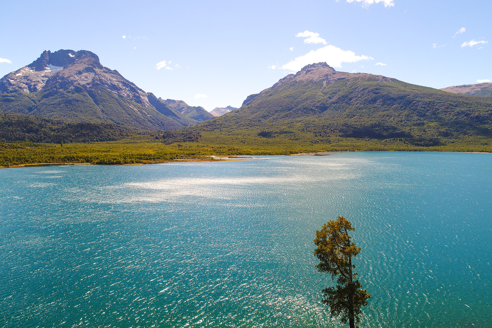

Bariloche 🇦🇷

Bariloche fue uno de los viajes más hermosos que hice. Lagos azules, montañas nevadas y un aroma a chocolate en cada calle. Visité el Circuito Chico y el Cerro Campanario.
Disfruté del atardecer frente al Lago Nahuel Huapi, con el sol cayendo detrás de los cerros. Un destino inolvidable.